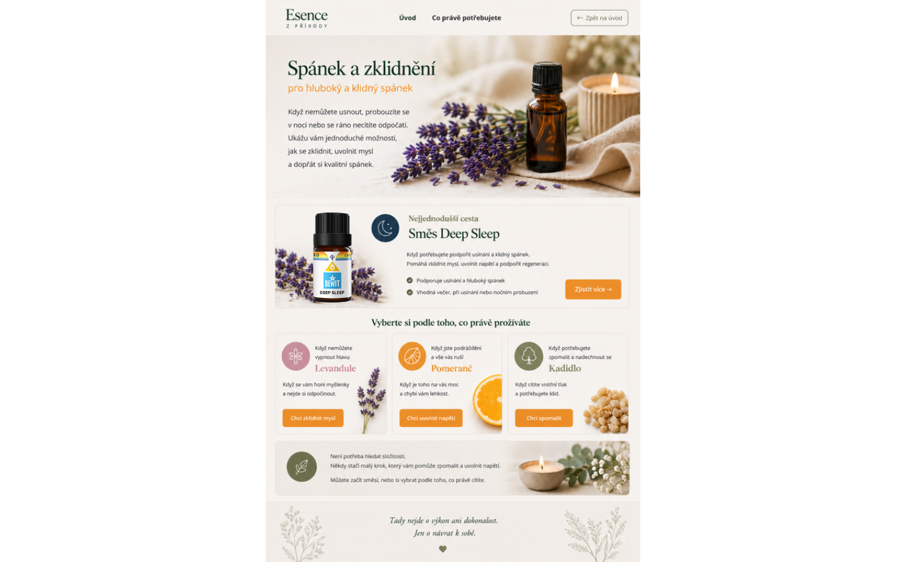

Noc, která vás skutečně dobije
pro hluboký a klidný spánek
Kvalitní spánek je základ všeho. Bez něj nefunguje tělo ani mysl. Přírodní esence pomáhají zklidnit myšlenky před spaním a připravit tělo na regenerační odpočinek, po kterém se probouzíte svěží.

Deep Sleep je pečlivě sestavená směs přírodních esencí navržená pro ty, kteří mají problém s usínáním nebo noční bdělostí. Kombinace levandule, cedru a heřmánku vytváří jemnou, uklidňující atmosféru, která dá tělu signál: je čas si odpočinout. Použijte ji 30 minut před spánkem.
Dobře prožitá noc je základ dobře prožitého dne. Spánek není ztráta času — je to nejcennější čas, který si můžeme dopřát. Esence nám pomáhají vytvořit ten pravý rituál usínání, který tělu dá jasný signál: teď je čas pustit vše a nechat se odnést do klidného spánku.